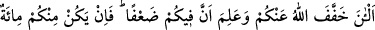

kıyasla diğer bütün ameller kırlangıç kuşunun denizden gagasıyle aldığı su
misâlidir.”[66]
Ey müminler! “Eğer sizden” savaş alanlarında “sabreden yirmi kişi olsa, onlar iki
yüz kişiyi yenerler. Sizden yüz kişi olsa onlar, kâfirlerden bin kişiyi yenerler. Çünkü o
kâfirler, anlamaz bir topluluktur.” Yani onlar, Allah’ı ve ahiret gününü bilmez bir
topluluk olmaları sebebiyle Allah’tan sevap umarak, Allah’ın emrine imtisalen, Allah
kelimesini yüceltmek ve O’nun rızâsı uğruna savaşmazlar. Savaştaki gayeleri yalnızca
câhiliye devrinin taassubu, nefsânî istekler, şeytanın adımlarına uymak, zulüm ve
düşmanlık ateşini alevlendirmektir. Onun için kahr-ı ilâhîyi ve yüzüstü bırakılmayı
haketmişlerdir.
Bu âyet, Allah Teâlâ tarafından yapılmış keremli bir vaaddir. Bir müminin on kâfir
karşısında sabır ve sebat göstermesinin vâcib oluşuna delâlet etmektedir.
Rasûlullah (s.a.v.), seriyye olarak Hz. Hamza’yı otuz kişilik bir süvari birliği ile
göndermişti. Bu birlik, Ebû Cehil komutasındaki üç yüz kişilik süvari birliğini hezimete
uğrattı.
“Bire on şeklindeki” hüküm müslümanlara ağır geldi ve bir müddet sonra bundan
sızlanmalar başladı. Bunun üzerine Allah şöyle buyurarak bu hükmü neshetti:
66. Şimdi Allah sizden (yükü) hafifletti ve sizde zaaf bulunduğunu bildi. Bundan
böyle sizden sabreden yüz kişi olsa, iki yüz (kâfiri) yenerler. Ve eğer sizden bin kişi
olsa Allah’ın izniyle iki bin (kâfir)i yenerler. Allah, sabredenlerle beraberdir.
“Şimdi Allah sizden” yükü “hafifletti.” ve bir müminin iki kâfir karşısında
dayanmasını farz kıldı.
İbn-i Abbas (r. anhümâ) der ki: “Üç kişiyle karşılaşıp da kaçan harpten kaçmış
sayılmaz. Ancak iki kişi karşısında dayanmayıp kaçan harpten kaçmış sayılır. Böyle
birisi büyük günah, işlemiştir.
Haddâdî de der ki: İki kişi karşısında sebat etmeyip kaçan müslüman şâyet silah ve
techizat olarak iki kâfirde bulunana denk bir halde ise o zaman harpten kaçmış sayılır.
Aksi halde sayılmaz.
“Ve sizde zaaf” yani bedenî zaaf “bulunduğunu bildi.” Teftâzânî der ki: “Şimdi”
buyurularak hükmün hafifletilmesinde anlaşılmayacak bir durum yoktur. Ancak ilm-i
ilâhînin “şimdi” diye sınırlandırılması, bir şey olmadan önce Allah’ın onu bilmediği
vehmini ortaya çıkarır. Bunun cevabı ise şöyledir: O husus meydana gelmeden önce